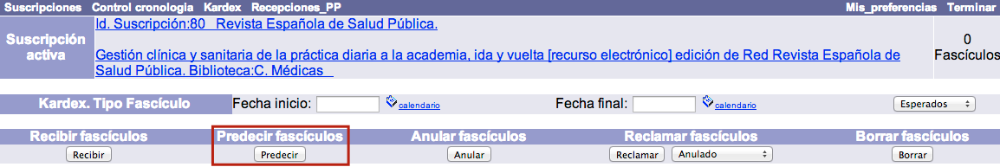
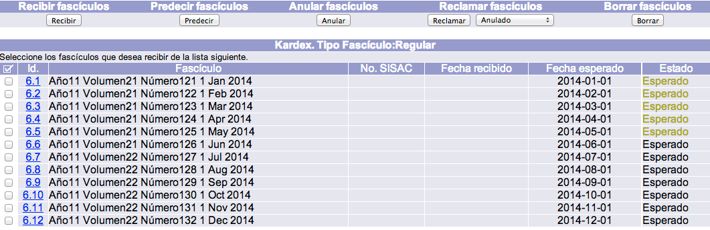
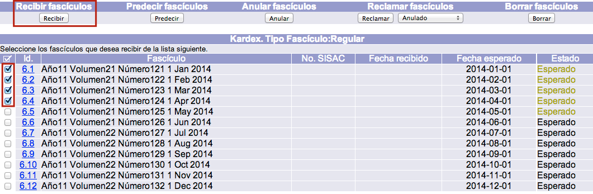
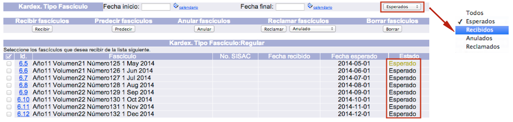
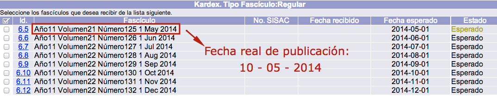
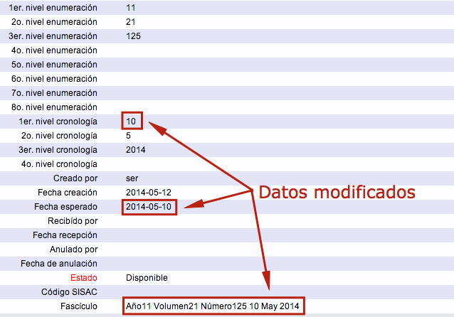
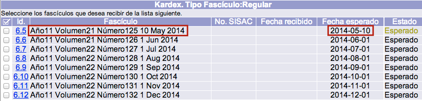

Predicción de fascículos
Ahora que la publicación periódica ya tiene creado un registro de suscripción y éste tiene asociado un control de cronología y numeración, es posible predecir los fascículos que se van a recibir. En este punto es necesario tener en cuenta que dichos fascículos aún no se han recibido en el sistema.
Este procedimiento es útil para revisar el control de cronología y numeración seleccionado, así como para verificar la exactitud de las fechas y numeraciones de cada fascículo. Por otro lado, mientras no se anulen y borren, los fascículos predichos y aún no recibidos van a desplegarse como parte del kardex del tipo de fascículo de la suscripción.
Además, cada vez que se haga clic en el botón Predecir, el sistema realizará la acción para un nuevo lote de fascículos de un año.
El procedimiento a seguir para la predicción es el siguiente:
- Estando en la pantalla de kardex mencionada en la sección anterior, y teniendo la suscripción activa, hacer clic sobre el botón Predecir.

- El sistema lleva a cabo la acción y presenta la predicción de fascículos de un año en la parte inferior de la ventana. Cada fascículo que vaya a ser recibido debe ser predicho antes. El sistema predice lotes de fascículos, permitiendo así listarlos para revisar cualquier posible excepción y hacer cambios en uno o más de ellos antes de recibirlos.

Recepción de fascículos
Una vez que se hayan predicho los fascículos en cuestión, el procedimiento a seguir para su recepción es el siguiente:
- Hacer clic sobre el cuadro selector, situado a la izquierda del campo Id., de todos aquellos fascículos de la lista que se quieran recibir. A continuación, hacer clic en el botón Recibir.El sistema realiza el proceso y, si está configurado así, también crea un registro de ítem para esos fascículos y los incluye en las existencias MARC.

- Por defecto, después de haber recibido uno o más fascículos, se despliega la lista de aquellos que aún están pendientes de recibir, es decir, con estado Esperado. Si se desea visualizar alguna otra categoría específica, o todos los fascículos de manera general, puede hacerse usando el menú desplegable de la sección Kardex. Tipo Fascículo.
 
Edición de fascículos
Puede darse la circunstancia de que alguno de los fascículos predichos llegue a la institución con una numeración y / o fecha diferente a la esperada, en tales casos, es posible modificar los datos presentes en el sistema para ajustarlos a los reales.

El procedimiento a seguir es el siguiente:
- Hacer clic sobre el número de Id del fascículo correspondiente. Este identificador es asignado de forma automática y es único para cada fascículo predicho en la suscripción.

- Se muestra el formulario con los campos detallados del fascículo. Hacer clic en el botón Actualizar para proceder a realizar los cambios necesarios.Campos que afectan a las existencias MARC
- 1er. nivel numeración: en este caso, corresponde al dato Año, con valor 11.
- 2o. nivel numeración: en este caso, corresponde al dato Volumen, con valor 21.
- 3er. nivel numeración: en este caso, corresponde al dato Número, con valor 125.
- Niveles siguientes: el sistema acepta hasta 8 niveles de numeración.
- 1er. nivel cronología: en este caso, corresponde al dato Día, con valor 1.
- 2o. nivel cronología: en este caso, corresponde al dato Mes, con valor 5.
- 3er. nivel cronología: en este caso, corresponde al dato Año, con valor 2014.
- Niveles siguientes: el sistema acepta hasta 4 niveles de cronología.
Campos que afectan a los registros de ítems - Fascículos: en este apartado se recogen los datos que necesita el sistema para crear registros de ítems.

- Llevar a cabo las modificaciones oportunas, teniendo en cuenta que todos los cambios que se hagan en los niveles de numeración y cronología afectarán a las existencias MARC creadas automáticamente al recibir el fascículo. Por ejemplo, si un fascículo fue predicho con un número y fecha específicas, pero se publicó con otros diferentes, y la información es cambiada en estos campos, al crear la existencia MARC se generará con los nuevos datos (nuevo número y nueva fecha).Por otro lado, si se hizo un cambio en los campos de niveles de numeración y / o cronología, es necesario que también se haga en el campo de Fascículo. De no ser así, se podría generar una existencia MARC y un registro de ítem con datos diferentes para un mismo fascículo. Además, es posible que si se cambió la fecha del fascículo en los dos lugares que se acaban de mencionar, deba modificarse también en el campo Fecha esperado. Esto depende más de la frecuencia o periodicidad de la publicación, con el objetivo de que el sistema no genere reclamaciones erróneas.

- Hacer clic en el botón Actualizar para confirmar los cambios realizados.
